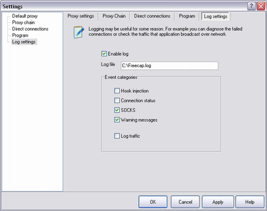

|
Logging may be useful for debug, problems resolving or just for logging traffic that sent/recieved by program.
Please remember, that log may be needed for FreeCap's author for bug fixing.

|
| Hook injection | all related to injection/hooking |
| Connection | program's winsock activity |
| SOCKS | all related to SOCKSv4, SOCKSv5 and HTTP proxy |
| Warning messages | no comments :). |
| Log traffic | log the network traffic into separate files. File name is same as log filename with suffix:
For sent packets: ".<socket handle>.asend.<sequence number>"
For recieved packets: ".<socket handle>.brecv.<sequence number>" |
|
|